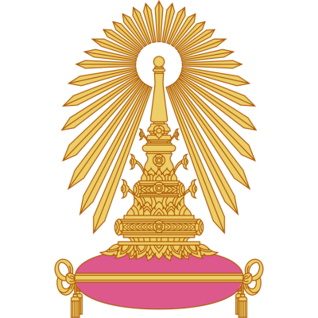
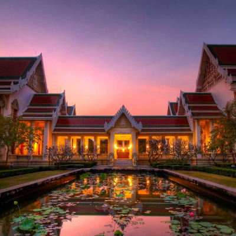
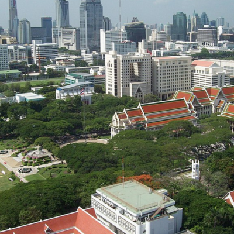

Chulalongkorn University



Chulalongkorn University, established in 1917 in Bangkok, is Thailand’s oldest and most prestigious university, often regarded as the nation’s leading institution of higher education. Renowned for its academic excellence, research innovation, and leadership development, the university offers a wide range of programs in science, engineering, medicine, social sciences, arts, and humanities. With its strong commitment to producing graduates who serve as leaders in both national and global arenas, Chulalongkorn University continues to play a vital role in driving Thailand’s progress while fostering international collaboration and sustainable development.